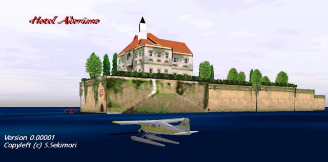
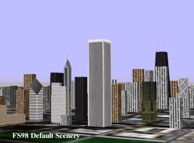
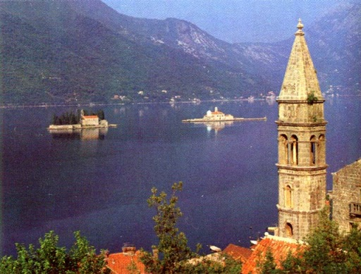

１枚の写真から...
１枚の写真から...

Hotel Adriano
Kamuiさんとは，私がFS98用に屋久島のシーナリーを組んでいた頃，あるきっかけから知り合う機会に恵まれました。
素晴らしいセンスをお持ちの方で，スナップショットのページでご覧頂いている氏の作品（画像）だけでなく，
数々の興味深い作品をお送り頂いています。
ある時，"陰面処理がうまく行かないのですが..." というメールに添えて送られてきた画像がこの写真なのです。
ホテル・アドリアーノ....そう，"紅の豚" の舞台になった，アドリア海に浮かぶ架空のホテルです。
私の目はこの画像に釘付けになってしまいました。
Hotel Adriano
Kamuiさんとは，私がFS98用に屋久島のシーナリーを組んでいた頃，あるきっかけから知り合う機会に恵まれました。
素晴らしいセンスをお持ちの方で，スナップショットのページでご覧頂いている氏の作品（画像）だけでなく，
数々の興味深い作品をお送り頂いています。
ある時，"陰面処理がうまく行かないのですが..." というメールに添えて送られてきた画像がこの写真なのです。
ホテル・アドリアーノ....そう，"紅の豚" の舞台になった，アドリア海に浮かぶ架空のホテルです。 私の目はこの画像に釘付けになってしまいました。
当時のFSでは，シーナリーの描画に使用するテクスチャは
256色という制限があり，独特のパレットを使用していたので，
実質は128色だったのです。
描画される建物もどれも同じようなテクスチャを
ステレオタイプに貼り付けただけのものでした。
もっとも，そのような建物しか描かれていませんでしたから，
FSの建物はこんなものだと思っていたわけです。
当時のFSでは，シーナリーの描画に使用するテクスチャは
256色という制限があり，独特のパレットを使用していたので，
実質は128色だったのです。
描画される建物もどれも同じようなテクスチャを
ステレオタイプに貼り付けただけのものでした。
もっとも，そのような建物しか描かれていませんでしたから，
FSの建物はこんなものだと思っていたわけです。

そこへ，この画像が飛び込んできたのです。
無理をお願いしてKamuiさんからデータファイルを送って頂き，FSに組み込んでみました。
そこにはこの写真の通りのホテル・アドリアーノが描画されていました。
すごいなぁ... きれいだなぁ...ため息のでるようなシーナリーでした。
当時の私は，テクスチャの使い方が全く下手でした。
どのようにすればこのようなホテルを描画させることが出来るのか，
氏から作り方を詳しく教えて頂きました。
ホテル・アドリアーノの写真がきっかけになって，私のシーナリー作成は大きく変わりました。
未だに，人工的な建物のテクスチャ作りは下手なのですが，
島（山や海岸線を含む）を作るという方向でテクスチャ作成技術を磨いてきました。
"Scenery" のページでご覧頂くことが出来る，LeeWard諸島やRangiroa環礁などは，
Kamuiさんから教えていただいた方法をたたき台にして，まとめ上げた作品です。
そこへ，この画像が飛び込んできたのです。 無理をお願いしてKamuiさんからデータファイルを送って頂き，FSに組み込んでみました。 そこにはこの写真の通りのホテル・アドリアーノが描画されていました。 すごいなぁ... きれいだなぁ...ため息のでるようなシーナリーでした。
当時の私は，テクスチャの使い方が全く下手でした。 どのようにすればこのようなホテルを描画させることが出来るのか， 氏から作り方を詳しく教えて頂きました。
ホテル・アドリアーノの写真がきっかけになって，私のシーナリー作成は大きく変わりました。
未だに，人工的な建物のテクスチャ作りは下手なのですが，
島（山や海岸線を含む）を作るという方向でテクスチャ作成技術を磨いてきました。
"Scenery" のページでご覧頂くことが出来る，LeeWard諸島やRangiroa環礁などは，
Kamuiさんから教えていただいた方法をたたき台にして，まとめ上げた作品です。

余談になりますが，先ほど，ホテル・アドリアーノを
"アドリア海に浮かぶ架空のホテル" と書きました。
確かに，アドリアーノは架空のホテルなのですが，
Kamuiさんからは "アドリア海東部の湖水地帯には，
本当に湖に浮かぶホテルがあるのですよ" と，
このような写真も送って頂きました。
余談になりますが，先ほど，ホテル・アドリアーノを
"アドリア海に浮かぶ架空のホテル" と書きました。
確かに，アドリアーノは架空のホテルなのですが，
Kamuiさんからは "アドリア海東部の湖水地帯には，
本当に湖に浮かぶホテルがあるのですよ" と，
このような写真も送って頂きました。